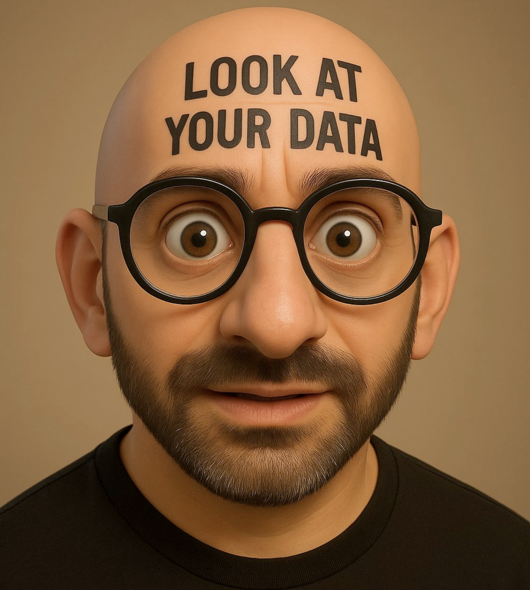
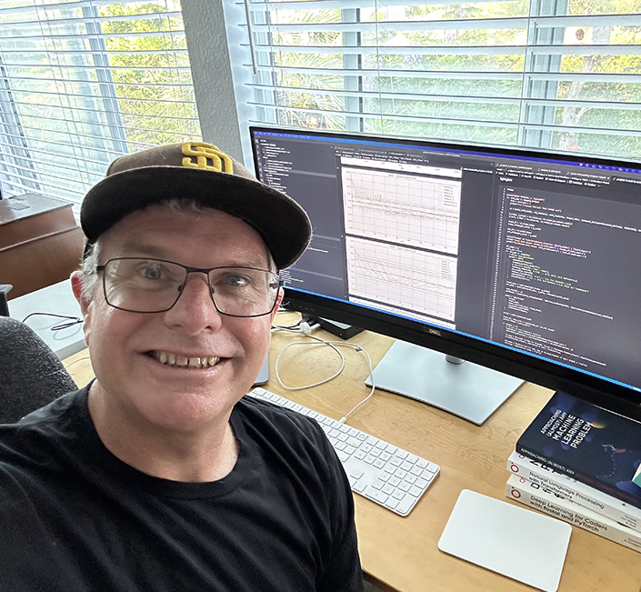

AI Evals For Engineers & PMs: A Retrospective
7 min
The initial cohort of the AI Evals for Engineers & PMs course is now in the books. Below are some of my…
Jun 15, 2025
Available for new engagements
I design, build, and deploy LLM-powered products end to end: eval-first AI pipelines, production-grade APIs, and polished front-ends. Backed by 25+ years of shipping software for companies of every size.
LLMs, evals & ML FastAPI · Vue · React · Postgres Author of blurr · fast.ai community leader
What I do
Practical, production-minded help for teams that want AI features and applications that work in the real world, not just in a demo.
Applied AI tailored to your business, from first prototype to a monitored, production system.
Robust, scalable web platforms engineered with modern tooling and a strong DevOps mindset.
Hands-on guidance so your team adopts, evaluates, and operates AI with confidence.
How I work
A simple, transparent process that keeps risk low and momentum high.
01
We scope the problem, the users, and what “good” looks like, then agree on a plan measured in weeks, not quarters.
02
A working slice of the product, fast. Real data, real users, real feedback before big investments are made.
03
Evals and error analysis drive every iteration, so quality is something we can see and improve, not just feel.
04
Deployed, monitored, documented, and handed off cleanly, with ongoing support when you want it.
Track record
I’ve had the pleasure of building with great companies across research, agriculture, e-commerce, education, and enterprise software.
From the blog
Notes from the trenches on evals, LLMs, fast.ai, and full-stack engineering.

The initial cohort of the AI Evals for Engineers & PMs course is now in the books. Below are some of my…
Who I am

I’m a full-stack web application and AI/ML developer with well over 20 years in the business. I’ve led teams and shipped systems for early-internet retail giants, universities, startups, and research labs, and these days I spend most of my time building LLM-powered products that are measured as carefully as they are engineered.
I’m the author of blurr, a Python library that lets fast.ai developers train Hugging Face transformers for core NLP tasks, and a proud fast.ai community leader, contributing to the library and helping folks on the forums and Discord.
Outside of work I enjoy hanging out with my two labradors, reading, working out, and above all else, learning.
Whether it’s an LLM-powered product, an ML pipeline, or a second opinion on your AI strategy, let’s talk about what I can build for you.